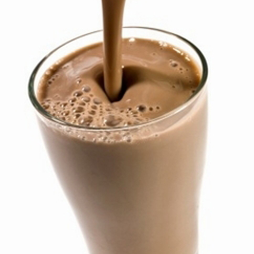
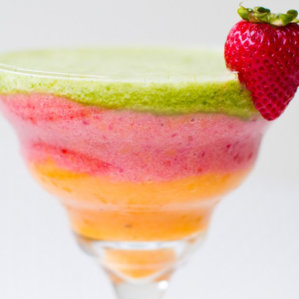
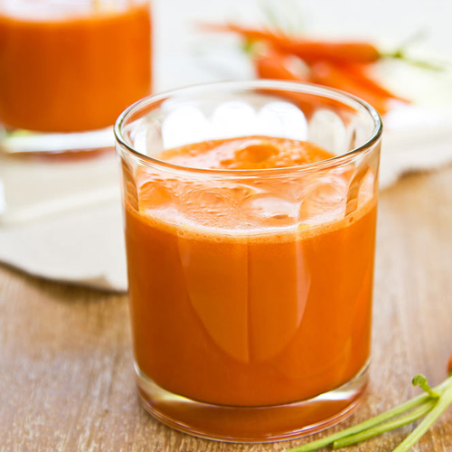
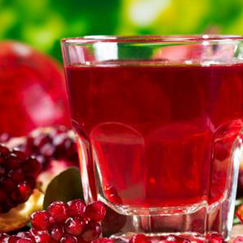

في وعاء نقوم بتقطيع الفراولة ثم نضيف السكر ونتركها لمدة ساعة حتى تصبح مليئة بالسائل
نضع الفراولة في الخلاط الكهربائي ونقطع الموز ونضيفه ونبدأ الخلط
لخلط لا يجب أن يتجاوز 30 ثانية حتى يصبح العصير مميز
بدون إضافة الماء سنكتفي بالماء الخارج من خليط الفراولة والسكر.. أنا زينت الكأس بقليل من بالكريمة
الفوائد
يعطي للجسم مقداركافي من الفيتامنات والحديد
برتقال
المقادير
5 ك برتقال
سكر
طريقة التحضير
بسم الله قومي بغسل البرتقال جيدا و ابشري حبات البرتقال تقريبا نصف الكمية واكتر ثم اعصريه كل علبة عصير البرتقال صافي يحتاج إلى علبة من السكر وهكذا بتقدري كمية السكر اللازمة
وضعيه على النار خفيفة جدا لا تسمحي له بارتفاع حرارته فقط تدفئته حتى يذوب السكر مع التحريك المستمر
ضعي لبشرة البرتقال فنجان سكر مباشرة بعد البشر السكر حتى لا تصبح مرة وحركين واتركيها ساعة مع بعض وقومي بعصرها بقطعة قماش شيفون لنكهة رائعة أكثر للعصير ثم اضيفي الكمية المعصورة من بشر البرتقال للعصير واحتفظي به لباقي السنة
الفوائد
يتميز بوجود فيتامين سي المفيد للجسم ويقيه من عده امراض

شوكلاته بالحليب
المقادير
4\3 كوب من الحليب
4\1 كوب من شراب الشوكولاته المركز
3 ملاعق ايسكريم فانيلا
طريقة التحضير
يوضع الحليب وشراب الشوكولاته المركز في الخلاطه الكهربائيه ويخفقان لمده 2 ثواني
يضاف الايسكريم ويخلط الكل في خلاطه الطعام جيداً حتى الحصول على مزيج ناعم
يسكب الشراب في اكواب طويله ويفطى كل كوب بالقشده المخفوقه ويرش فوقه مسحوق لقرفه او الكاكاو قبل التقديم
الفوائد
يعطي للجسم طاقه و يساعد عل تنشيطه

كوكتيل
المقادير
3 ثمرات تفاح
3 ثمرات كيوي
6 ثمرات موز
3 ثمرات برتقال عصير
0.5 كيلو فراولة
ظرف كريم شانتيه
كوب حليب بارد
3 ملعقة كبيرة عسل
طريقة التحضير
نغسل الفواكه جيدا ونقطعها إلى قطع صغيرة حسب الرغبة ونضعها في وعاء
نعصر البرتقال ونضيفه إلى خليط الفواكه
نضيف العسل ونقلب جيدا
نخفق ظرف الكريمة مع كوب الحليب البارد على السرعة العالية لمدة 7 دقائق حتى يتكون الكريم شانتيه
في كأس التقديم نضيف ملعقة من الكريم شانتيه بقاع الكأس وشريحة من الكيوي بجدار الكأس
الفوائد
يحتوي عل العديد من الفيتامنات والعناصر الهامه نظرا لكثره انواع الفواكه به

جزر
المقادير
0.5 كيلو جزر
2 حبات برتقال
حبة ليمون
ياغورت او زبادي ذوق فرولة او ليمون
1 كلغ سكر
طريقة التحضير
نطبخ الجزر و نفرمه فرماا ناعما و نضيف عصير الليمون و البرتقال و الزبادي و السكر
نخلطهم و نقدمه باردا صحة و هنا
الفوائد
يحتوي عل فيتامنات مفيده للجسم وجميع اعضائه

الرمان
المقادير
2كاس من الرمان الفرط
طريقة التحضير
تفرط حبوب الرمان .
توضع في الخلاط الكهربائي وتخلط.
يصفى الرمان بقطعة قماش حتى تصفى البذور.
في وعاء على النار يوضع العصير
يراعى التقليب المستمر
عند الغليان يرفع من على النار
يوضع في البراد حتى يبرد
يوضع ربع كاس من عصير الرمان وملعقتين من السكر والباقي ماء ويقلب